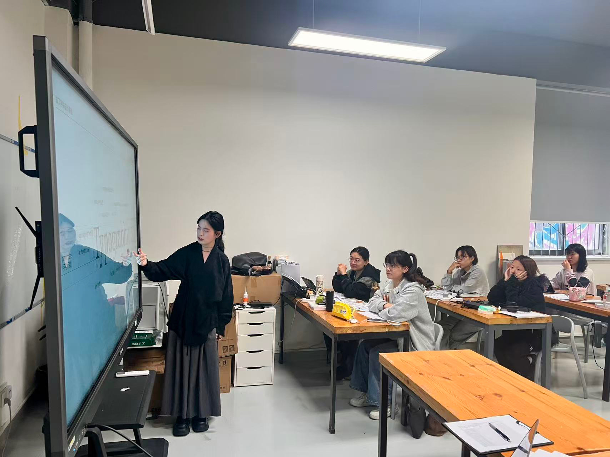
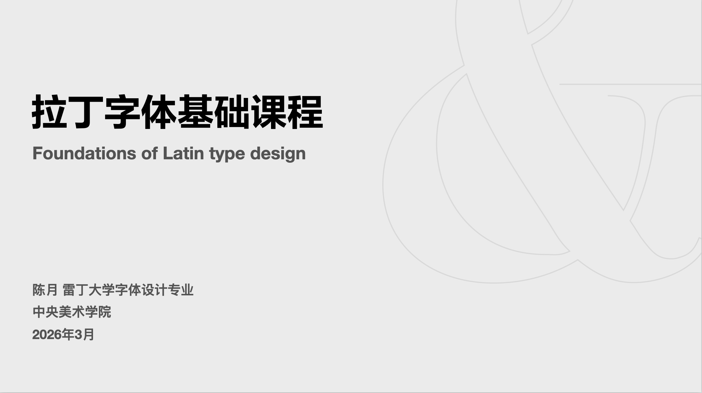
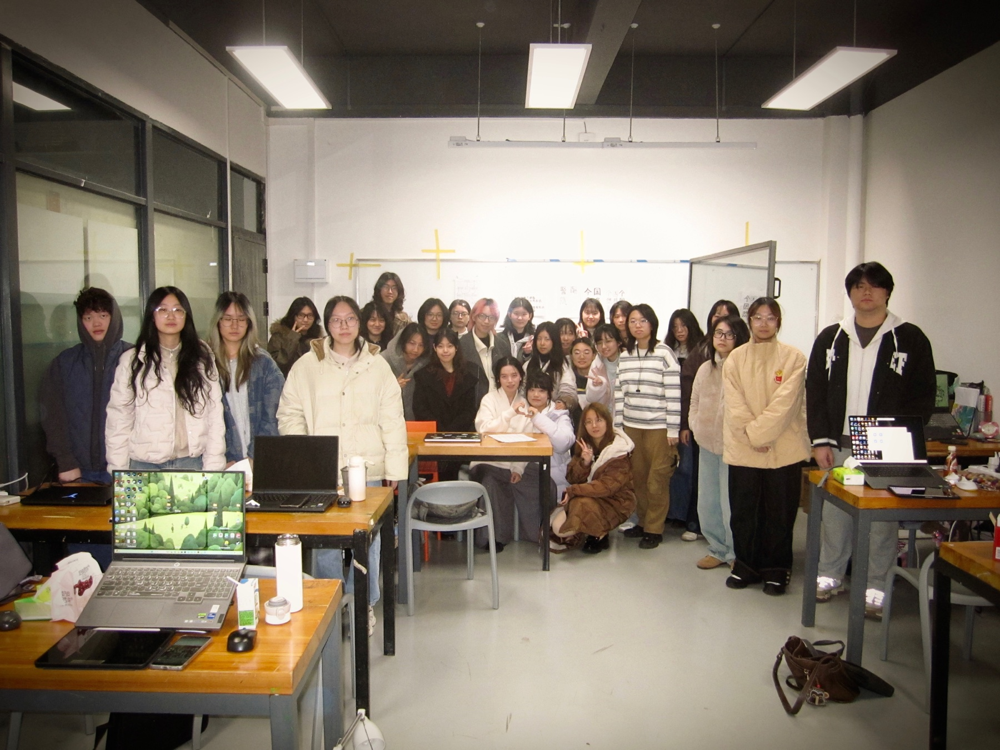
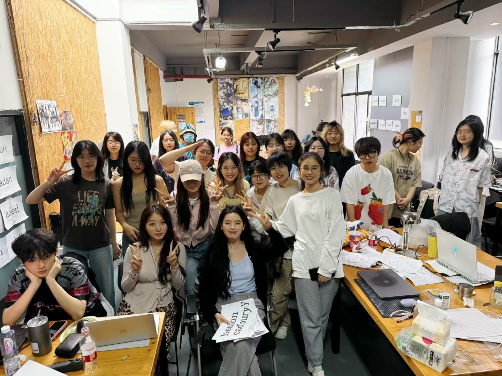
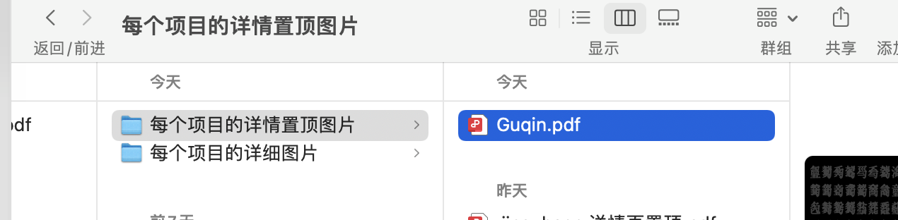

Course
Chinese-Latin Cross-script Design and Application
Course on multilingual typography, cross-script composition, and applied type design.
Activities

Course
Course on multilingual typography, cross-script composition, and applied type design.

Course
Foundational Latin type design course covering letterform structure, spacing, and type development.

Course
Experimental type design course exploring symbols, visual systems, and contemporary display typography.

Course
Course on multilingual typography, cross-script composition, and applied type design.

Teaching Assistant
Elective course exploring food culture, lettering, and expressive type design.

Teaching Assistant
Poster design course focused on visual identity, exhibition communication, and artist-facing design.